Как завести площадку и карточку, выдать права, привязать актив к заявке, сменить статус, настроить автоматизацию, посчитать отчёт, нарисовать схему и открыть свои активы на портале.
Примеры построены на учебном проекте «Клиники», ключе активов BZSO и площадке «Казань». В вашем проекте названия будут своими. Слова на кнопках совпадают с экраном.
Экран активов открывается по адресу /plugins/servlet/asset-tree и пунктом меню Jira «Активы». Язык экрана совпадает с языком пользователя Jira. Данные лежат в базе Jira, отдельную базу ставить не нужно.
Слева одна колонка значков. Подпись появляется при наведении.
На телефоне те же разделы стоят внизу: Все, Мои, Графики, Отчёты, Схемы и Ещё. Карточка открывается поверх списка, кнопка «Назад» возвращает к дереву. Кнопки «Назад» и «Вперёд» браузера ходят по открытым местам: карточка, площадка, тип, корзина, раздел настроек и конкретный отчёт.
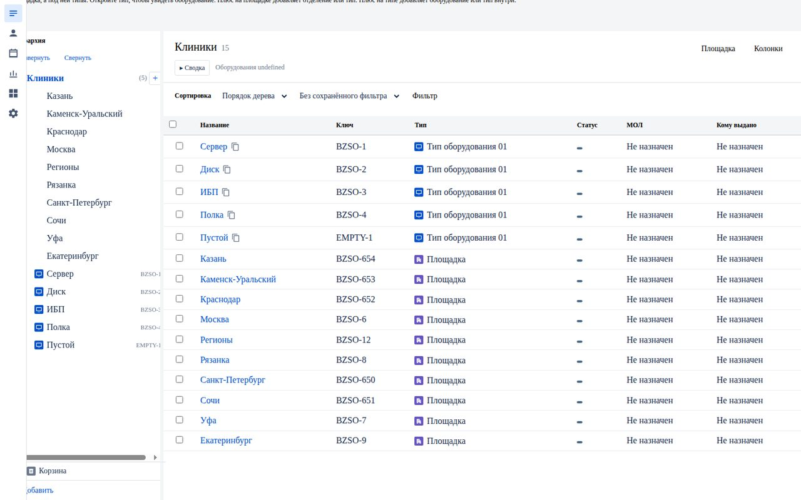
Администратор готовит проект один раз. Дальше руководитель ведёт оборудование, а пользователи работают в уже настроенных типах и правах. Экран виден тому, кто может смотреть проект Jira, и тому, кому доступ выдан в настройках этого проекта. Клиент портала с одной ролью Service Desk Customers этот экран не открывает.
asset-tree-1.3.390.jar. Файл OBR не нужен и сборкой не создаётся./plugins/servlet/asset-tree. Пустой проект встречает заголовком и кнопками «Добавить площадку» и «Добавить тип».Откройте Настройки → Проект, блок Модули. Пока модуль выключен, его вкладка и блоки на карточке скрыты. Данные при выключении не стираются. Модули помечены BETA: базовое дерево, карточка, типы, статусы, права и книга Excel этой пометки не имеют.
| Модуль | Для чего | Где его настройки |
|---|---|---|
| Календарь | Работы по датам: ТО, поверка, мероприятия, повтор, отметка «Проведено» | Вкладка «Календарь». Свои виды работ — в настройке модуля |
| Схемы | План площадки в сантиметрах и значки оборудования | Вкладка «Схемы». Общий доступ — кнопка на сохранённой схеме |
| Отчёты | Подсчёты, диаграммы, доски, Excel и письмо по расписанию | Вкладка «Отчёты» и шестерёнка модуля: простой, заявки, доска в сводке, рассылка |
| Жизненный цикл | Закупка, гарантия, договор, амортизация, списание | Блок на карточке. В настройке модуля — свёрнутый вид и запасной согласующий |
| Портал | Поле актива на заявке и список оборудования в профиле клиента | Настройки → Портал |
| Печатная карточка | Макет наклейки с именем, ключом и QR | Настройки проекта, конструктор листа |
| Документы | Заполнение бланка Word данными карточки | Настройки → Документы. Кнопка «Документ» на карточке |
| TNI | Компьютер с портала, сканирование сети, AD, SCCM и проверка связи | Источники и типы — Настройки → Импорт. Срок хранения — Настройки → Проект. Переключатель виден администратору |
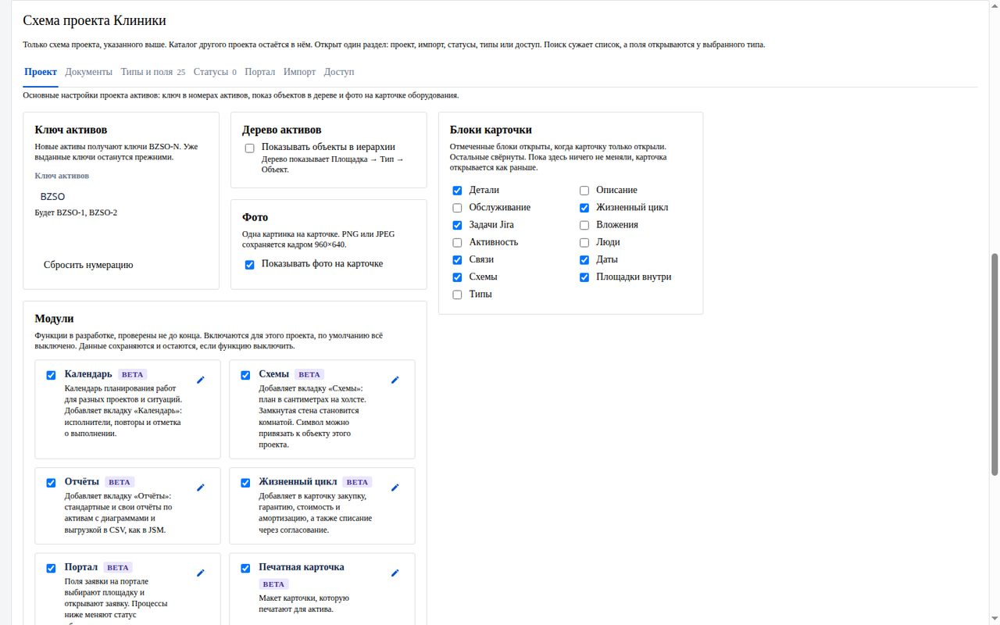
| Пункт | Что делает |
|---|---|
| Ключ активов | Префикс номеров, например BZSO. Новая карточка получит BZSO-1, следующая BZSO-2. Ключ не обязан совпадать с ключом проекта Jira. Уже выданные номера сами не переписываются |
| Сбросить нумерацию | Только у администратора. Заново выдаёт номера с 1 всем карточкам проекта, включая корзину, в порядке текущих ключей. Дырка между живыми ключами сама не заполняется |
| Показывать объекты в иерархии | Включено — оборудование разворачивается прямо в дереве. Выключено — в дереве площадки и типы, список объектов открывается справа |
| Показывать фото на карточке | Одна картинка PNG или JPEG. При добавлении рамку 3:2 двигают и тянут за угол. В карточку попадает кадр 960×640. Площадка картинку не получает. Снятая галочка прячет фото и оставляет файл |
| Блоки карточки | Какие разделы открыты сразу: детали, описание, обслуживание, жизненный цикл, заявки, вложения, активность, люди, связи, даты, а у площадки ещё схемы, вложенные площадки и типы. Пока галочки не меняли, карточка открывается как раньше: детали, люди, связи и даты открыты, описание, обслуживание, файлы и комментарии свёрнуты. Человек может свернуть раздел сам, и это положение остаётся у него на всех карточках |
| Автоматическое удаление TNI | Появляется, когда модуль TNI включён. Срок хранения в днях, сколько проверок за какое окно и что делать с молчащим объектом: корзина или удаление |
Тип — это вид карточки. У площадки свой тип, у оборудования свои. Откройте Настройки → Типы и поля.
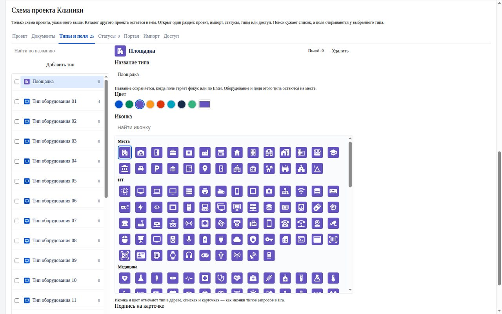
Как завести тип оборудования на примере принтера:
Название типа меняется в его карточке. Ключ типа остаётся прежним, поэтому оборудование заново создавать не нужно. Подтип показывает поля родителя первыми и подписывает, от какого типа они пришли. Такое поле нельзя перетащить, изменить и удалить.
Замок слева снимает защиту с одного поля. После нажатия открывается форма: у подтипа свои название, вид, пункты списка и галочки, и они больше не следуют за типом. Пример: у «Стоматологии» поле «Производитель» общее, а у подтипа «Наконечник» после замка в нём свой список. Открытый замок возвращает поле типу. Значения, уже записанные в карточках, остаются: ключ поля тот же. Своё поле, которое подтип завёл само, по-прежнему стоит после наследованных.
У типа площадки задайте свою подпись места: филиал, отделение, кабинет. Эта подпись стоит на карточке оборудования вместо слова «площадка». Тип внутри площадки можно вложить в тип один раз: так отделение заменяется типом. Новый филиал не получает все типы проекта. Пустой тип с площадки убирается.
Виды полей и как они ведут себя:
| Вид | Как заполняется | Куда попадает |
|---|---|---|
| Текст, многострочный текст, число | По Enter или когда поле теряет фокус | Карточка, колонка, отчёт, метка документа по названию поля |
| Дата | ДД.ММ.ГГГГ или ГГГГ-ММ-ДД | На карточке показывается как ДД.ММ.ГГГГ |
| Пользователь | Человек из каталога Jira | В документе — имя. На портале объект виден этому человеку во вкладке «Моё» |
| Выпадающий список, несколько значений, флажки, переключатели | Сохраняются сразу | В заявке и в отчёте видно выбранное название, а не внутренний код |
| Метки, ссылка, версия | По Enter или когда поле теряет фокус | Ссылка остаётся ссылкой на карточке |
Над таблицей оборудования редактор колонок. Плашки перетаскиваются мышью или стрелками, крестик убирает колонку, Ещё открывает поля с поиском. Одинаковое название поля у разных типов становится одной колонкой. По умолчанию возвращает исходный набор. Личный набор колонок в «Моих активах» пишется в учётную запись и виден только этому человеку.
Откройте Настройки → Статусы. У проекта свой список. Сразу есть шесть: на складе, в эксплуатации, в ремонте, в резерве, на обслуживании, списан. Статус можно переименовать, добавить и удалить, если им никто не пользуется. Последний статус удалить нельзя.
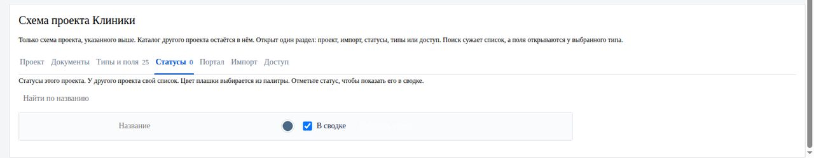
Цвета плашки: к выполнению, в работе, готово, синий, оранжевый, красный, фиолетовый, бирюзовый, серый, розовый, салатовый, коричневый. Галочка В сводке выводит статус цифрой над списком всех активов.
Если у типа включено обслуживание, на карточке задают дату последнего проведения и интервал. В этот день объект переходит в выбранный статус, ответственному уходит письмо. Кнопка Проведено начинает следующий интервал и пишет в историю, кто отметил работу. Проверка идёт раз в 15 минут по часовому поясу Jira. Просроченная работа помечена «просрочено». Проведённый день остаётся в календаре.
Сам по себе переход заявки статус оборудования не меняет. Это делает правило Automation, раздел 3.7.
Поле нужно, чтобы человек на портале и сотрудник в Jira выбирали оборудование прямо в заявке, а не писали название в комментарии.
На портале это выпадающий список. Строка показывает путь вроде «Оргтехника / МФУ / Canon 2035», площадку и ключ. Поиск смотрит имя, ключ, описание, ответственного, кому выдано и значения полей. Можно остановиться на площадке: в заявку пишется сама площадка. Выбор идёт и каскадом: площадка, затем тип и подтип, затем оборудование.
Выбор строки при создании заявки сразу привязывает объект. Он появляется на панели Активы справа на карточке заявки и в блоке «Заявки» на карточке объекта. Если на форме поля нет, объект, с которого клиент открыл портал кнопкой «Создать заявку», всё равно прикрепляется.
Откройте Настройки → Портал того проекта, который настраиваете. Поля заявки, показ активов, вид карточек, набор полей на карточке, группы и отчёты хранятся отдельно: у «Службы технической поддержки» свои, у «Поддержки медицинского оборудования» свои. Отчёт, который не нужен в ИТ, просто не отмечают в группе ИТ-проекта. Позже в одном проекте можно показать один отчёт, в другом — два других.
На вкладке такие блоки:
| Блок | Что задаёт |
|---|---|
| Поля заявки и правила | Если в заявке выбраны указанные поля, список активов открывается на нужной площадке, типе или объекте. Список повторяет дерево: площадка, площадка и тип, площадка, тип и объект, вложенная площадка и так дальше. Правило из двух полей важнее одного, а при равных полях побеждает более глубокая цель. Пример: поле «Город» равно «Казань» — открывать площадку Казань или тип «Стоматология» внутри неё. Правила пишутся для открытого проекта и не действуют в другом. Пока правил нет, поле показывает всё дерево. Подпись берётся у группы флажков, а не у одного флажка. Отметка флажка сразу открывает список |
| Автоматизация | Кнопка «Открыть автоматизации проекта». Она ведёт в Automation for Jira. Схему статусов плагин больше не рисует: статус задаёт правило, раздел 3.7 |
| Активы клиента на портале | Галочка «Показывать клиентам оборудование, которое за ними числится». Пока она снята или за клиентом ничего нет, блока в профиле нет. Галочка своя у каждого проекта: в медицинском проекте показ может быть включён, в ИТ — выключен |
| Вид карточек по умолчанию | Плитка, карточки или список. Вид задаётся для этого проекта. В профиле клиента оборудование проекта открывается его видом, пока человек сам не выберет другой в браузере. Менять вид может только администратор |
| Что клиент видит о каждом объекте | Название и роль видны всегда. Дальше отмечаются ключ, тип, статус, расположение, описание, даты и свои поля. Если ничего не отмечено, остаются ключ, тип, статус и расположение. Набор полей тоже свой у каждого проекта |
| Группы портала | Именованная группа людей, площадок и отчётов этого проекта. Группа медицинского проекта не видна в ИТ-проекте. Сотрудники группы в Уфе видят отчёт своей группы и не видят отчёт группы в Сочи. В одной группе до 500 человек. Человек видит не больше шести отчётов, и только отчёты своего проекта. Группу можно добавить и с карточки площадки |
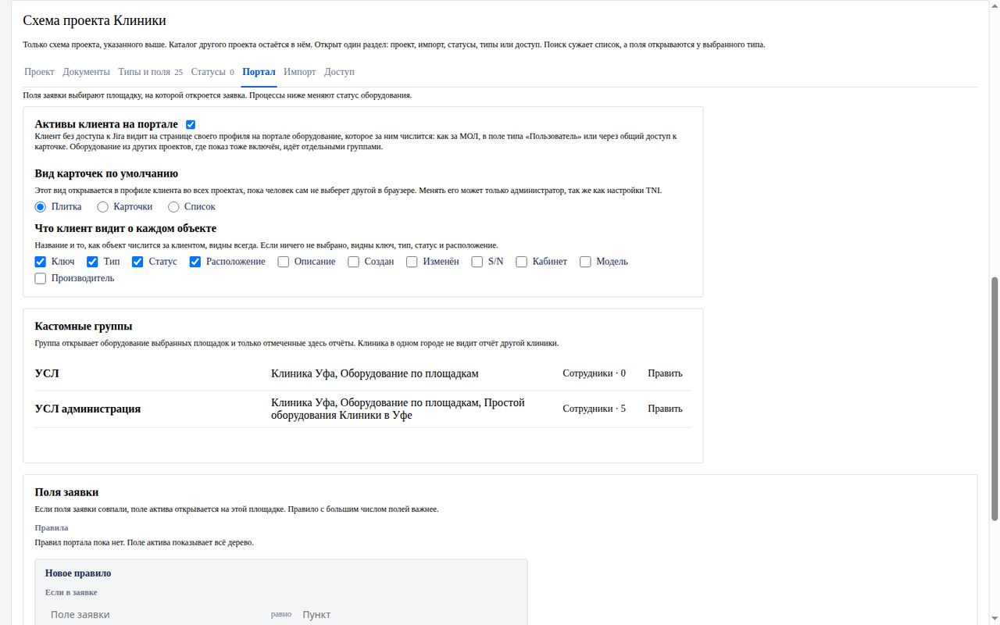
Раздел Настройки → Импорт скачивает оборудование книгой Excel и загружает её обратно. У каждого типа свой лист, на листе только поля этого типа. Пустой ключ создаёт объект, заполненный ключ обновляет его. «Пустой шаблон» скачивает те же колонки без строк.
Рядом с МОЛ стоит колонка «Кому выдано»: заполненная ячейка назначает человека, пустая снимает его, а книга без этой колонки человека не трогает. Тип и площадка ограничивают и скачивание, и загрузку: можно выгрузить всё оборудование одной площадки или одного типа. Новая строка без площадки встаёт в выбранную площадку. Карточки, которых в файле нет, не открываются и не меняются.
В той же книге после листов типов идут листы «Связи», «Жизненный цикл» и «Обслуживание». На каждом сначала ключ, название, тип и площадка. У связей дальше колонки «Несёт», «Установлено на», «Включает», «Входит в», «Нужен для» и «Зависит от». Одна строка — один объект. Несколько связанных объектов пишутся в одной ячейке через точку с запятой: сначала ключ, затем название. Пустая ячейка уже записанные связи не меняет. Если одно название есть у нескольких объектов, без ключа строка не загрузится: программа не выбирает наугад. Скачанная книга уже ставит ключ и название. Старый файл, где в ячейке был только ключ, тоже загружается.
| Ключ | Название | Несёт |
|---|---|---|
| BZSO-1 | Компьютер | BZSO-2 Монитор; BZSO-3 Принтер |
| BZSO-2 | Монитор | |
| BZSO-3 | Принтер |
Эта строка значит: компьютер BZSO-1 несёт монитор BZSO-2 и принтер BZSO-3. На карточках монитора и принтера та же связь читается «установлено на». Так же заполняются остальные колонки: «Включает», «Входит в», «Нужен для», «Зависит от».
На листе обслуживания одна строка на каждую работу: вид, работа, дата, интервал, период и исполнитель. Тот же вид обновляет строку, новый вид добавляет её, пока их не больше двенадцати. Тип без галочки обслуживания такую строку не принимает. Выключенный модуль календаря лист пропускает.
На листе жизненного цикла: дата покупки, поставщик, документ, цена, валюта, дата ввода, гарантия, подрядчик, номер и сроки договора, срок службы и остаточная стоимость. Пустая ячейка не затирает уже сохранённое.
В файле может быть до 20 000 строк. Экран отправляет книгу частями по 400 строк. Ошибка одной строки попадает в список и не отменяет остальные. После загрузки на карточке остаётся итог: сколько создано и сколько обновлено, отдельно по типам, связям, обслуживанию и жизненному циклу.
Тот же обмен принимает JSON, до 2 000 объектов: ключ или внешний идентификатор, имя, тип, статус, площадка, МОЛ, кому выдано, описание и поля. Пустое поле оставляет уже записанное значение, пока вызов явно не просит записать пустое.
Модуль заводит компьютер, ноутбук, телефон или планшет, с которого написали заявку на портале, и умеет обходить сеть. Пока модуль включён, источники стоят в Настройки → Импорт и открыты администратору. Срок хранения стоит в Настройки → Проект.
| Источник | Что делает, когда включён |
|---|---|
| Браузерный отчёт | Портал записывает систему, браузер, экран, ядра, память и локальный адрес. Выключите, если браузер не видит настоящий компьютер: актив из этого отчёта не создастся |
| Сканирование подсети | Сервер Jira обходит сеть 192.168.1.0/24, диапазон или список адресов. Ответивший узел становится активом |
| Active Directory | Читает компьютеры домена. Хватает обычного пользователя. Область — budzdorov.ru или DC=budzdorov,DC=ru, либо пусто, тогда область прочитает контроллер. Учётная запись пишется как BUDZDOROV\пользователь |
| Configuration Manager | Это не база SQL. Укажите сервер сайта с AdminService, например sccm.budzdorov.ru, порт 443. Пароль вводится в момент загрузки и в базе плагина не хранится |
| Файл CSV | Выгрузка Get-ADComputer или список устройств SCCM. Повторная загрузка обновляет те же активы |
| Проверка доступности | Кнопка «Проверить связь» на карточке и перенос молчащих хостов. Выключенная проверка убирает кнопку и не переносит хосты |
Ниже выберите, какой тип создавать для компьютера, ноутбука и остальных видов. Вид без типа не заводится. Карточка «Размещение по площадкам» кладёт хост на площадку по коду в начале имени: KRUL кладёт KRUL-IT на выбранную площадку. Более длинный код важнее короткого. Пока сохранено хотя бы одно правило, хост без подходящего кода не создаётся. Уже созданная карточка при смене правила не переезжает.
Если компьютер с таким именем хоста уже есть, или у него в проверке связи записан тот же адрес, заявка привязывается к этой карточке и вторую не создаёт. Серийный и инвентарный номера участвуют в сверке, только когда они заполнены с обеих сторон. Принтер, ИБП, МФУ и телефон сверяются по своему типу, названию и номерам, а не по имени компьютера. Браузер, сканирование, AD и SCCM не меняют тип, который человек уже поставил. Имя, которое человек написал сам, сохраняется.
Срок хранения задаётся днями. Дальше плагин проверяет адрес указанное число раз за указанное окно, например 3 раза за 3 дня. Ответ начинает срок заново. Молчание переносит актив в корзину или удаляет его и отправляет письмо ответственному. Без адреса актив не удаляется. На карточке объект можно исключить из этой проверки. Для всего типа то же правило включается в настройках типа.
«Проверить связь» стоит кнопкой в ряду действий карточки. Зелёная точка — отвечает, красная — не отвечает. В активностях остаётся полный вывод команды ping. Проверка пингует имя хоста, как оно записано, например KRUL-IT, а затем внутренний адрес.
Модуль Документы включается в блоке «Модули». Пока он выключен, вкладки «Документы» и кнопки «Документ» нет. Уже загруженные шаблоны сохраняются. Готовых бланков в плагине нет: у каждой компании своя форма.
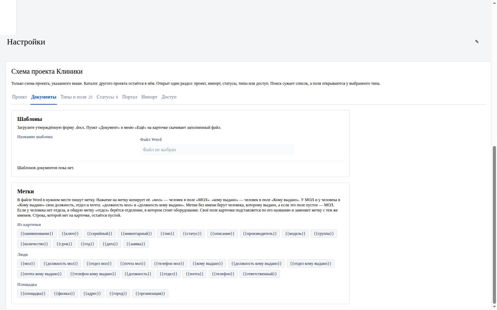
Список в настройках — это готовые метки плагина. Кроме них в шаблон можно поставить любое поле этой карточки по его названию. Поле «Ram» пишется как {{Ram}}. Регистр и пробелы не важны. Пустое поле становится пустой строкой. Если у типа такого поля нет, метка остаётся в файле как есть. Поле типа «Пользователь» подставляет имя, список — выбранный пункт.
| Метка | Откуда берётся значение |
|---|---|
{{наименование}}, {{ключ}}, {{серийный}}, {{инвентарный}} | Карточка. Серийный и инвентарный находятся по названию поля |
{{тип}}, {{статус}}, {{описание}} | Тип, статус и описание |
{{площадка}}, {{филиал}}, {{адрес}}, {{город}}, {{организация}} | Место и проект |
{{мол}}, {{должность мол}}, {{отдел мол}}, {{почта мол}}, {{телефон мол}} | Человек в поле «МОЛ» |
{{мол кратко}} | Фамилия и инициалы. «Бондаренко Олег Сергеевич» становится «Бондаренко О.С.» |
{{кому выдано}} и те же должность, отдел, почта, телефон, {{кому выдано кратко}} | Человек в поле «Кому выдано» |
{{фио кратко}}, {{должность}}, {{отдел}}, {{почта}}, {{телефон}} | Сначала «кому выдано», а если поле пустое — МОЛ. Если у человека нет отдела, «отдел» берёт отделение, в котором стоит оборудование |
{{ответственный}}, {{ответственный кратко}} | МОЛ, полным именем и инициалами |
{{срок}}, {{год}}, {{дата}}, {{заявка}}, {{количество}} | Срок службы, год ввода, сегодняшняя дата, связанная заявка, количество |
{{Ram}} или другое своё название | Это поле карточки |
Должность, отдел и телефон берутся из Active Directory Attributes Sync: тех же строк, что на заявке в блоке «AD Атрибуты автора» — «Должность», «Отдел», «Мобильный». Каталог Jira сам эти поля не хранит. Если в синхронизации поле названо иначе, плагин смотрит и имя атрибута в каталоге, например title, department, telephoneNumber, mobile.
Пока свой шаблон не сохранён, наклейка печатает имя, тип, место, ключ и QR. Сканирование QR открывает карточку в Jira. В конструкторе лист задаётся в миллиметрах. Кнопки «−», «+», «Вписать» и колесо мыши меняют только масштаб просмотра. Блоки перетаскивают по листу и по сетке: свой текст, поле карточки, QR кода актива, логотип, картинка. У блока меняются размер, шрифт, цвет и начертание. Свой QR загружают в меню «Ещё» на карточке оборудования. На экране карточки он не показывается, на наклейке встаёт в блок «Пользовательский QR».
Подробная выдача людям — в разделе 3.4. Администратору нужно знать уровни, чтобы не открыть лишнего.
| Вид | Что можно |
|---|---|
| Просмотр | Смотреть дерево, типы, объекты и сводку |
| Площадки | Добавлять, менять и удалять филиалы, отделения и кабинеты |
| Типы | Добавлять, менять и удалять типы |
| Объект | Добавлять и менять оборудование, статус, поля и переносить его |
| Активы | Полный доступ внутри своего проекта, включая список доступа |
| Администратор проекта | Объекты, настройки и модули своего проекта, кроме TNI |
| Администратор | Полные права в этом проекте, включая TNI. Строку ставит администратор Jira |
| Только отчёты | Смотреть отчёты. Дерево этот вид не открывает |
| Только карта | Смотреть план. Дерево этот вид не открывает |
| Просмотр схем | Карточки схем и чертёж |
| Создание и правка схем | Создавать, менять и удалять чертёж. «Активы» и «Администратор» включают оба права на схемы |
Несколько прав складываются, более широкое побеждает. У права можно сузить типы списком ключей или именем схемы и поля как ключ:read или ключ:write. Пустой список означает все типы и все поля. Если ограничение полей задано, поле вне списка скрыто. Просмотр проекта в Jira эти ограничения не сужает. Администратор Jira видит все проекты. Руководитель проекта и право «Изменение активов» дают вид «Активы» этого проекта.
Скрытая площадка пропадает из дерева, поиска, портала, заявок, отчётов, календаря, экспорта и корзины. Кнопку «Скрыть площадку» видит администратор Jira, администратор проекта и человек, у которого в доступе отдельно отмечено «Скрытые площадки». Это право не входит в обычное редактирование. Его ставят в блоке «Площадки», строка «Скрытые площадки» — «Да». У тех, кто право имеет, площадка остаётся и помечена «скрыта».
Руководитель ведёт один проект: где стоит оборудование, кто за него отвечает, кому что можно править и какие цифры смотреть. Другие проекты в списке доступа ему не видны.
Корень дерева — проект. Под ним площадки: филиал, отделение, кабинет. Площадку можно вложить в площадку. Площадка верхнего уровня на карте считается отдельным зданием.
Как добавить площадку:
Порядок меняется перетаскиванием. Верх строки типа ставит его выше, низ — ниже, середина другого типа вкладывает в него, перенос на строку площадки выносит обратно. Объект перетаскивается за строку так же. Ctrl и щелчок отмечают несколько объектов, повторный Ctrl снимает отметку. Перетаскивание одного из отмеченных переносит всю отметку. Перенос на объект другого типа сначала спрашивает подтверждение.
Правый щелчок по площадке или по типу открывает квадратную кнопку «↑↓». На площадке она выстраивает вложенные площадки, типы и оборудование по имени. На типе — оборудование этого типа. Следующий щелчок идёт от Я до А. Подсказка на кнопке говорит, в какую сторону пойдёт это нажатие. Числа в имени идут по значению: «Кабинет 2» остаётся перед «Кабинет 10».
Над списком корня стоят цифры: сколько единиц, площадок, статусы с галочкой «В сводке» и сколько без ответственного. Рядом кольцо статусов, типы, площадки с наибольшим числом объектов и ответственные. Клик по цифре или строке отбирает этот список, клик по площадке открывает её. Ответственный отбирается по учётной записи, поэтому одинаковые имена не смешиваются. Статусы и типы в сводке считаются только по оборудованию.
Поиск ищет по имени, ключу, описанию и полям в выбранном проекте или во всех видимых. С площадки и из типа он показывает совпадения по всему проекту, а не только внутри открытой ветки. Щелчок по заголовку колонки сортирует таблицу, повторный щелчок меняет направление. Правило поиска можно сохранить как свой фильтр.
В списке отмечают несколько строк. Панель действий закреплена внизу: сменить статус, тип, ответственного, перенести, скопировать, удалить, добавить одно фото на все отмеченные. Копия берёт тип, место, статус, описание, ответственного и поля. Файлы и заявки остаются у исходного объекта. Удаление ветки спрашивает подтверждение и переносит её в корзину. Список показывает по 1000 строк и листается дальше. Ширину дерева и правой панели меняют, потянув за край.
Карточка собрана как заявка Jira: белая панель и кнопки сверху. На карточке три разных человека.
| Поле | Кто это | Зачем |
|---|---|---|
| МОЛ | Ответственный за карточку | Видит объект в «Моих активах» и на портале. Берётся из каталога Jira: имя, почта, телефон, отдел, должность |
| Кому выдано | Человек, у которого оборудование на руках | Это не МОЛ. Его можно назначить, снять и выдать себе. Колонка есть в списке и в книге Excel |
| Общий доступ | Люди, которым открыли площадку или карточку | На портале они видят оборудование. На карточке стоит пометка «Общий доступ» |
Что на карточке и как этим пользоваться:
В правке «Отмена» и «Сохранить» стоят внизу. «Отмена» оставляет прокрутку на том же месте. Комментарий пишется как в Jira: жирный, курсив, цвет, ссылка, списки, вкладки «Визуальный» и «Текст». «Публичный комментарий» виден на портале, «Внутренний комментарий» остаётся у сотрудников. Файлы добавляются окном «Добавить вложения». Русское имя сохраняется как есть. Внутренний файл на портале не показывается. Щелчок по файлу открывает предпросмотр: картинку, PDF или текст можно скачать и отправить на печать. Файлы прикладываются и к площадке.
В истории видно, кто создал объект, перенёс его, сменил статус, МОЛ, поле или файл. У площадки история остаётся и после удаления объекта, который на ней стоял.
Оборудование связывается с другим оборудованием в блоке Связи. На карточке это рисунок под блоком «Люди»: у объекта значок типа и имя, между ними линия. Один объект рисуется одной карточкой, даже если связей несколько. Колёсико меняет близость, пустое место можно сдвигать. Синий карандаш открывает большое окно. Значки можно перетащить, линии остаются на своих объектах.
На второй карточке фраза читается наоборот, если свою фразу не вписали: «входит в» становится «включает», «зависит от» — «нужен для», «установлено на» — «несёт». У направленной связи можно хранить до двенадцати пар «имя — значение». «Связан» — простая пара, в том числе с объектом другого проекта. Каждый остаётся в своём дереве. Поиск по ключу находит оборудование любого проекта, даже если этот проект человеку не открыт. Карточка чужого проекта при этом не открывается. Площадка в этот блок не встаёт: место задаётся деревом.
Откройте Настройки → Доступ. На вкладке три блока.
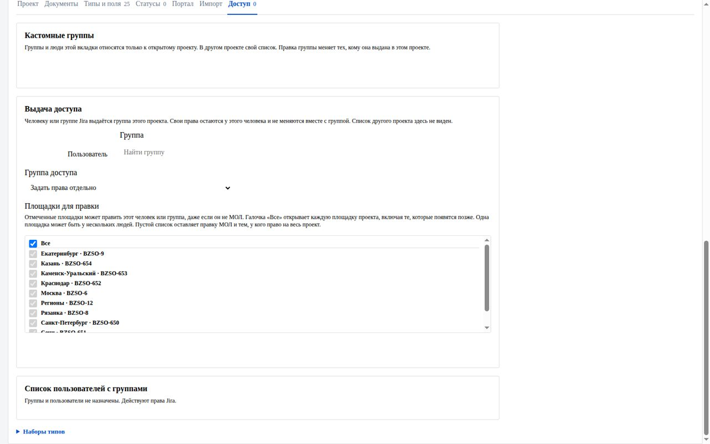
Как выдать права человеку:
Своя площадка без отдельной отметки — та, где человек указан МОЛ или согласующим списания, вместе со вложенными площадками, плюс оборудование, где он сам МОЛ. С правом «создать площадку» на своих площадках он заводит площадку внутри своей, даже если МОЛ новой площадки другой. Площадку в корне проекта он заводит, только если сам станет её МОЛ. Оборудование в чужом месте создаётся, если он сам МОЛ новой карточки.
Сделать своими снимает человека с именованной группы и копирует эти права на него одного. Дальше изменение группы его не трогает. В списке у такой строки написано «Свои права». Кнопка не про площадки: площадки по-прежнему отмечаются кнопкой «Площадки» в строке списка. Личная запись живёт отдельно от групп Jira: снятие группы оставляет его доступ, а новая группа не заменяет уже выданную ему запись. Правка группы меняет всех, кому она выдана.
Аппарат мог остановиться в 14:00, а заявку подать в 15:00. Отчёт простоя берёт исправленное время. То же можно сделать для нескольких отмеченных строк списка: панель внизу меняет статус сразу всем.
Смена статуса из заявки сама не происходит. Её ставит правило Automation. Списание в статус «списан» идёт через согласование, раздел 3.11, а не обычной плашкой.
Связать можно с двух сторон. Плагин не пишет комментарий в заявку, когда оборудование прикрепляют, создают, меняют, удаляют или восстанавливают. Комментарии людей остаются.
Заявка, в поле которой уже стоит этот актив, тоже попадает в список, когда карточку открывают.
Если заявка уже есть, а в поле записан номер, ключ или имя, открытие заявки создаёт связь. Когда одно имя есть у нескольких объектов, берётся объект той площадки, которая указана в заявке, например филиал «Усть-Лабинск». Пока объект в корзине, панель, поиск и поле «Актив» его не предлагают.
Правила живут в Automation for Jira этого проекта. Кнопка Открыть автоматизации проекта стоит на вкладке портала. Сохранённая раньше схема процессов статус больше не записывает. Без Automation for Jira 6 или новее эти компоненты не включаются. Очередь почты Jira должна быть включена, если правило отправляет письмо.
| Компонент | Когда его ставить |
|---|---|
| Статус заявки изменился | Триггер. Выберите статус из workflow заявки. Пустая строка — любой переход |
| Оборудование изменено | Триггер. Запускается при создании, изменении, смене статуса, корзине и возврате. Для списания и графика второе поле выбирает, что произошло: запрошено, согласовано, отказано, добавлено, перенесено, изменено, выполнено или удалено. Пустая строка — любое из них |
| День в календаре | Триггер, один на проект. В день, когда в календаре стоит событие, правило запускается. Пустой список вида оставляет все события, выбранный пункт оставляет один вид. Проведённый день пропускается. Повтор того же дня пропускается |
| Есть связанное оборудование | Условие. Правило идёт дальше, только если к заявке привязан актив. Статус оно не записывает |
| Задать статус оборудования | Действие. В правиле от заявки меняет оборудование этой заявки, в правиле от оборудования — то, которое его запустило. Статус берётся из списка проекта. В том же действии можно указать поле даты и времени заявки, например customfield_10200. Пустое поле оставляет текущий момент. Смена статуса из правила новое событие не порождает |
| Создать заявку из этого дня | Действие для триггера «День в календаре». Выбирает тип заявки или тип запроса портала и само заполняет тему и описание: вид, название, дату, время, исполнителя, оборудование и примечание. Тип запроса портала ещё берёт заказчика и обязательные поля. Если событие стоит на оборудовании, заявка сразу к нему привязывается. Ключ заявки виден на этом дне календаря |
| Привязать заявку к этому оборудованию | Действие после обычного «Создать заявку», если заявок ещё не было и правило продолжается |
| Письмо об оборудовании | Действие. Получатель: ответственный, кому выдано, согласующий списание, автор запроса, исполнитель работы или конкретный сотрудник. Строки письма отмечаются галочками, дополнительная фраза — обычный текст, ссылка на карточку добавляется сама |
Событие «Списание» приходит при запросе, согласовании и отказе. Согласование дополнительно публикует смену статуса на списан. Само списание письмо не отправляет: письмо уходит только из действия «Письмо об оборудовании». Событие «График изменён» приходит при добавлении, переносе, изменении, выполнении и удалении строки. Наступление срока остаётся отдельным событием.
Откройте вкладку Отчёты. Слева список, справа карточка. Заголовок, кнопки создания и скачивания и выбор проекта стоят в одной строке. Карточка из отчёта открывается как в иерархии. Выход из отчётов снимает отбор, который отчёт поставил на дерево. Щелчок по строке, столбцу, полосе или сектору открывает Все активы и ставит фильтр этого значения. Строка суммы и центр диаграммы не нажимаются.
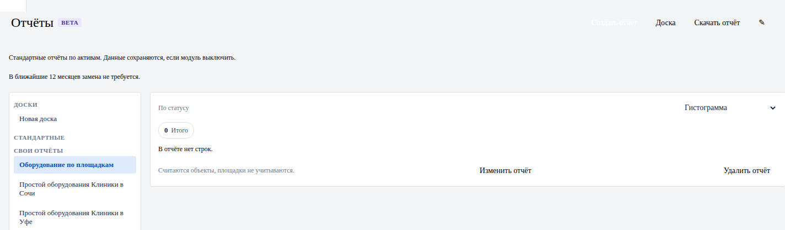
Стандартные отчёты:
| Отчёт | Что считает |
|---|---|
| Статусы, типы, площадки, ответственные, кому выдано | Сколько оборудования в каждом значении. В отчёте по площадкам объект считается в ближайшей площадке, в списке виден весь путь |
| Поступления по месяцам | Когда оборудование купили. Пустой отчёт пишет, что нужна заполненная карточка жизненного цикла |
| Стоимость и амортизация | Балансовая стоимость. Число объектов остаётся в таблице, сумма пишется с разрядами и знаком валюты |
| Гарантия, возраст, списания | По датам жизненного цикла. В списке у месяца и возраста стоит дата закупки, у гарантии — «Гарантия до», у списания — причина или дата решения |
| Работы графика | Каждая работа, включая событие без объекта. Открытый день на сегодня или раньше — своя строка. Проведённая и снятая работа в этот отчёт не входят. Скрыт, пока модуль календаря выключен |
| Выполненные работы | Дни, которые отметили «Проведено». Если кнопку нажали после дня работы, строка «С просрочкой», нажатие в срок — «Вовремя» |
| Неисправности сейчас | Единицы в статусах простоя по площадкам и сколько они уже в таком статусе |
| Заявки за период | Сколько заявок создано на каждую единицу. В настройке модуля: все статусы заявки, только открытые или отмеченные. Пока настройку не меняли, считаются все |
| Простой | Сколько дней, часов и минут единица провела в статусах простоя. Срок берётся из истории и из фактического времени смены. Срок короче минуты считается как одна минута. Переход из одного статуса простоя в другой остаётся одним заходом |
| Своевременность ТО | Сколько единиц прошло срок вовремя, с опозданием или ещё ждёт. Скрыт, пока модуль календаря выключен |
Статусы простоя отмечаются в настройке модуля отчётов. Сразу отмечен «В ремонте». Пока ни один не отмечен, «Неисправности сейчас» и «Простой» пустые. У трёх последних отчётов сверху стоят даты периода, по умолчанию с первого числа месяца по сегодня.
Виды диаграммы: гистограмма, полосы, линейная, с областями, точечная, кольцо, круг, радарная, Ганта и Венна. Когда значений больше восьми, гистограмма рисуется полосами, чтобы имена не ломались. Ганта берёт дату покупки и дату гарантии, для работы графика — день работы. Венна показывает пересечение трёх самых больших групп. Вид, выбранный на экране, сохраняется: у того, кто может править объекты, в самом отчёте; у остальных — в браузере. После создания отчёт можно изменить: имя, группировку, фильтр, показатель и вид диаграммы. Удаление сначала спрашивает подтверждение.
Скачать отчёт сохраняет открытый отчёт. Скачать книгу собирает Excel по всем видимым отчётам. Печать открывает ту же карточку для бумаги. CSV в UTF-8 с разделителем «;», копейки с запятой без знака валюты. На экране строки идут по 300, в файл попадают до 50 000. Если видимых отчётов нет, лист пишет, что отчёты скрыты. Скрытый стандартный отчёт при входе не открывается.
Кнопка Доска открывает именную доску из выбранных отчётов, а не все сохранённые отчёты сразу. У каждой панели свой вид диаграммы и ширина: половина строки или вся строка. Состав правится на том же экране: порядок, диаграмма и ширина. Один период действует на всю доску. «Новая доска» открывает форму, список слева остаётся на месте. В настройке модуля пункт «Доска в сводке» выбирает, что открывается по умолчанию: свои карточки сводки или одна из досок.
| Пункт | Зачем |
|---|---|
| Доска в сводке | Что открывать вместо карточек сводки |
| Статусы простоя | Какие статусы считать простоем для «Неисправностей» и «Простоя» |
| Статусы заявок | Какие статусы считать в «Заявках за период»: все, открытые или отмеченные |
| Письмо с книгой | Раз в неделю или раз в месяц, до 20 человек, день месяца с 1 по 31. В коротком месяце день приходится на последний. Письмо ставится в очередь Jira раз в 15 минут. «Отправить сейчас» сначала сохраняет получателей и плановый день не занимает |
| Каждому верхнему месту своя книга | Ответственный верхнего места получает книгу только по оборудованию внутри него. Место без ответственного, без почты или без оборудования письмо не получает. Общий список по-прежнему получает всю книгу |
Если включён жизненный цикл, над отчётами виден прогноз замены на 12 месяцев: ключ объекта и дата.
Вкладка появляется вместе с модулем. Открывается месяцем. Рядом переключатель: годы, год, месяц, неделя, рабочая неделя и день. Сегодняшнее число — синий кружок. На годе двенадцать маленьких календарей, занятый день отмечен точкой. Неделя и день — сетка времени с 08:00 до 20:00, сегодняшняя колонка выделена, по текущему времени идёт красная черта.
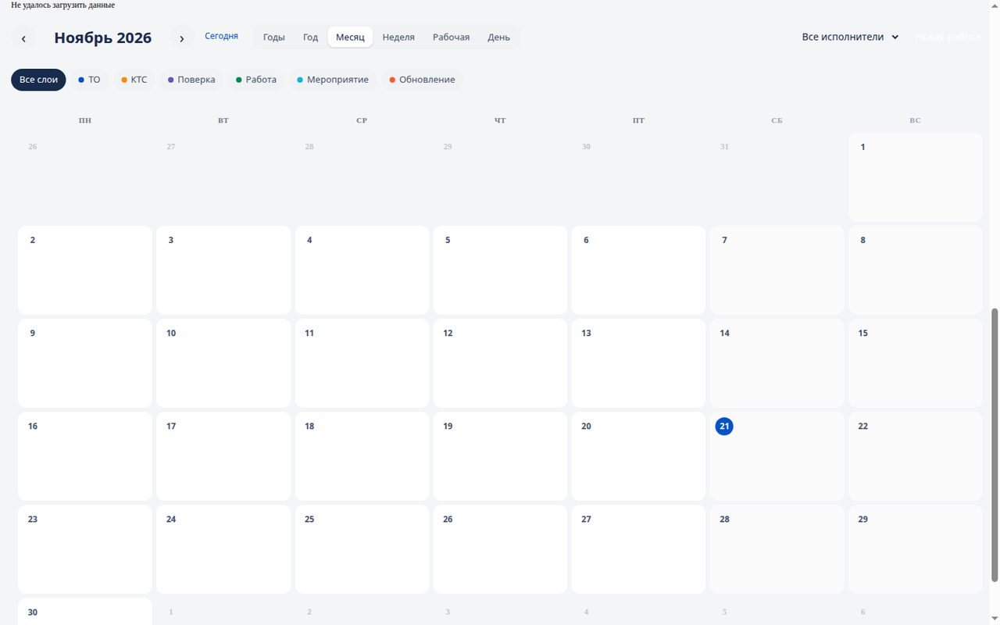
Карточка перетаскивается на другой день и на другой час. Минуты начала и длительность сохраняются. У повтора переносится только этот день, остальные даты серии остаются. «Проведено» закрывает выбранный день и сохраняет ритм. С карточки актива «Проведено» закрывает ближайший срок. Разовая работа остаётся на календаре зачёркнутой. Если в дне больше трёх работ, «+N» раскрывает остальные. Просрочка загорается, когда день уже прошёл или сегодняшнее время начала наступило. Слои сверху прячут ненужные виды. Фильтр оставляет одного исполнителя. Стрелки листают период, «Сегодня» возвращает текущий день.
Заявку из дня календаря создаёт правило Automation, раздел 3.7.
Вкладка Схемы открывается карточками: у каждой схемы имя, площадка и маленький чертёж. «Новая схема» создаёт лист. «Открыть» показывает чертёж, «Редактировать» включает сохранение и удаление. «К схемам» возвращает к карточкам. Без права «Создание и правка схем» чертёж нельзя изменить и удалить. На общей схеме человек без этого права ставит своё оборудование, стены и чужие значки остаются на месте.
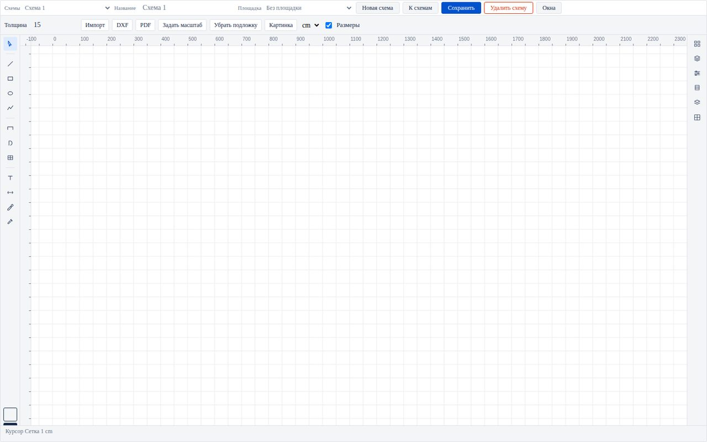
Как нарисовать план кабинета:
Колесо приближает к курсору. Лист двигается средней кнопкой, пробелом с левой кнопкой или протяжкой правой. Сетка шагает на 1, 5, 10, 25, 50 или 100 см. Одна единица — 1 см. Флажок «Размеры» прячет длины и углы. Флажок «Привязка» включает шаг 1 см. Флажок «Направляющие» показывает линии по краям и центрам других фигур. Инструменты слева: линия, прямоугольник, эллипс, перо, стена, текст, размер, дверь и окно. Внизу колонки два квадрата заливки и обводки. Справа значки открывают свойства, шаблоны, активы, листы, слои или комнаты. Окно можно перетащить, закрепить булавкой и потянуть за край.
В шаблонах лежат стойки, серверы, сеть, видеонаблюдение, СКУД, мебель по помещениям и сантехника. Значок — вид сверху, размер в сантиметрах. Правый щелчок по выделенным фигурам и «Сделать шаблон» собирает свой узел. «Изменить» открывает его части. Уже поставленные фигуры после удаления шаблона остаются. Свой материал добавляется на схеме и получает штриховку. Любой слой, кроме последнего, удаляется: его фигуры переходят на оставшийся. Скрытый слой прячет фигуры, заблокированный не даёт их двигать.
Право на объекты и «Изменение активов» в Jira чертёж само не открывает. У права схем можно сузить типы списком ключей или именем схемы.
Когда модуль включён, на карточке хранятся дата закупки, поставщик, цена, валюта, ввод в эксплуатацию, гарантия до даты и сервис по гарантии, срок в месяцах, остаточная стоимость, ежемесячная амортизация и балансовая стоимость. Дата замены — день, когда заканчивается срок полезного использования. Остаток пересчитывается при сохранении и раз в месяц. Поля заполняются в редактировании карточки и сохраняются вместе с ней.
Договор с подрядчиком — обслуживание или ремонт: подрядчик, номер, начало и окончание. Кнопка «Договор с подрядчиком» стоит отдельной строкой. В форме их открывает «Добавить договор». Пустые подрядчик и номер убирают этап. К полю «Документ (договор, счёт)» и к номеру договора прикрепляются файлы. В общий список вложений и на портал они не попадают.
В настройке модуля есть галочка «Свернуть на карточке по умолчанию». Щелчок по заголовку на карточке по-прежнему сворачивает и разворачивает блок. Там же запасной согласующий для оборудования без площадки.
Как списать:
Удаление площадки или оборудования убирает его из дерева и кладёт в Корзину. Строка стоит внизу колонки иерархии, сразу над кнопкой «Добавить», и отмечена иконкой ведра. Её видит тот, кто может удалять площадки или оборудование. Объект пропадает из дерева сразу, как только сервер принял перенос.
Пока объект в корзине, поиск, панель заявки и поле «Актив» его не предлагают, правка карточки закрыта. Ключ занят, пока строка лежит в корзине. В истории пишется, кто перенёс объект и кто вернул. Вложенные объекты, удалённые этим же действием, возвращаются вместе со строкой.
Пользователь работает в уже открытом проекте. Что именно можно менять, задаёт руководитель: весь проект, свои площадки или отмеченные площадки. Если кнопки нет, этого действия в ваших правах нет.
Мои активы показывают оборудование, где вы указаны ответственным. Поиск сужает список по имени, ключу, проекту и площадке. Кнопка Колонки прячет и добавляет поля, в том числе «Кому выдано». Этот набор виден только вам.
{{Ram}}.| Ситуация | Что вы можете |
|---|---|
| Вам выдан только просмотр | Открывать дерево, карточку, сводку. Кнопок правки нет |
| Вы МОЛ площадки или вам отметили площадку | Править оборудование этой площадки и вложенных. Чужие площадки остаются для просмотра, если просмотр у вас есть |
| Вам и другому человеку отметили одну Казань | Оба правите оборудование Казани |
| Вам выданы только отчёты или только схема | Открывается этот раздел. Дерево активов этот вид сам не показывает |
| Объект в корзине | В поиске его нет. Вернуть может тот, кому можно удалять |
Кнопка, которой нет на экране, в инструкции не ищется: её скрыли права или выключенный модуль. Попросите руководителя открыть действие в Настройки → Доступ.
Пользователь портала не открывает экран активов. Своё оборудование он смотрит в профиле клиента, на странице, куда Jira Service Management пускает по ссылке портала. Менять статус, поля, МОЛ, связи и файлы сотрудников на портале нельзя.
Откройте профиль. Если администратор включил показ и за вами числится оборудование, на странице есть блок «Мои активы». Пока галочка снята или список пуст, блока нет. Если оборудование скрыто, а вашей группе портала выданы отчёты, в профиле остаются только эти отчёты.
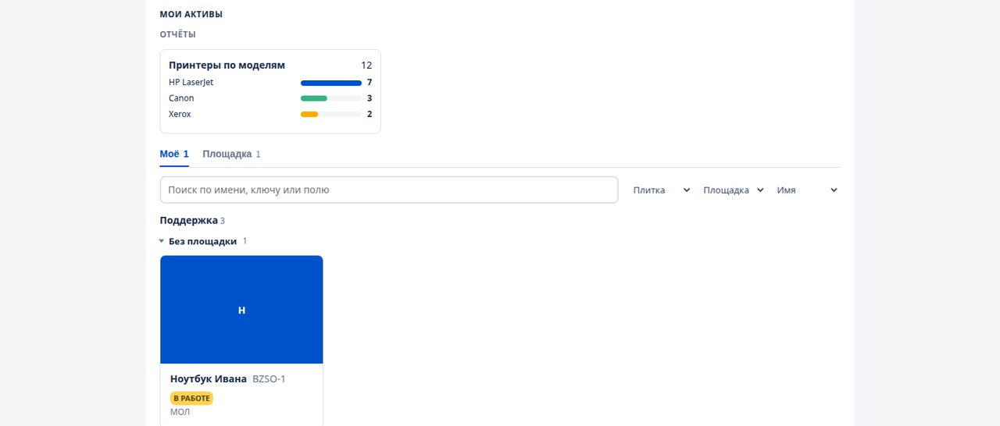
Вкладка Моё — оборудование, где вы МОЛ, куда оно выдано, и карточки, в которых вы указаны в поле типа «Пользователь». Вкладка Площадка — оборудование через общий доступ к площадке или через группу портала. Общий доступ помечен словами «Общий доступ». Вложенные площадки входят в ту же ветку. Каждый проект, где показ включён, идёт своей группой. Оборудование, которое видно только через общий доступ, открывается в окне «Площадка», своё — в окне «Моё».
Отчёты стоят над вкладками. Клиент видит только отчёты групп портала того проекта, где он в группе, не больше шести. Группа медицинского проекта не показывает отчёт в ИТ-проекте, и группа в Уфе не показывает отчёт группы в Сочи. Состав отчёта задаёт руководитель, выдачу группе — администратор на вкладке «Портал» этого проекта. Клиент отчёт сам не собирает.
Под вкладками одна строка поиска: имя, ключ, роль и поля карточки. Рядом три списка.
По умолчанию оборудование собрано по площадке и отсортировано по имени.
После создания оборудование стоит на панели заявки: имя, поля, которые отмечены «Показывать в заявке», и МОЛ. Для правки карточки откройте Jira, если вам выдан доступ к проекту. Это уже роль пользователя из части 4.